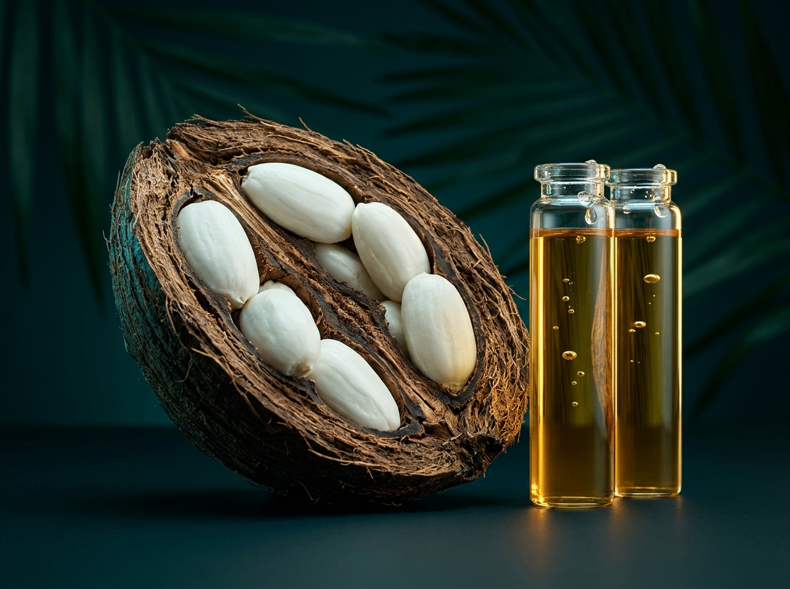

Versão A · Recomendada para Uso Semanal
Cabeçalho Fixo + 5 Abas Limpas (Sem Poluição Visual)
Cada assunto fica em sua aba dedicada. Na abertura, o pesquisador vê apenas Progresso, Etapas e Variáveis — clique nas abas abaixo para explorar.
← Meus Projetos
🔒 E2EE Zero-Knowledge (AES-256-GCM)
📜 Audit Log (42)
👤 Prof. Aramys

Bioprospecção e Bioprodutos do Babaçu (Attalea speciosa)
LaFIT / PPGST / UFMA · 2024–2027 · Semáforo: ● Em dia · 6 orientandos ativos
Pack 1: Bancada/FarmáciaPack 6: Alimentos⚠ CEUA vence em 42 dias
+ Convidar Aluno (Grátis)
📦 Dossiê do Edital
Etapas Cadastradas do Projeto Progresso geral: 64%
1. Coleta & Padronização do Mesocarpo · Cooperativa100% ✓
2. Extração & Caracterização Fitoquímica · HPLC/Fenólicos100% ✓
3. Ensaios Biológicos & Citotoxicidade · Resp.: Fernanda (15/12)65% · Em curso
Amostras: 24/36Ensaios celulares: 3/4Prazo: 0d desvio
4. Formulação Bioproduto & Gate Patente (INPI)20% · Iniciada
5. Redação, Submissão & Prestação de ContasAguardando
📈 Variáveis de Monitoramento + Variável
Amostras / N experimental24 / 36 (67%)
Protocolos & Ensaios validados7 / 10 (70%)
Estabilidade formulação30 / 90 dias
Check-ins dos alunos (mês)4 / 5 recebidos
💬 Último Check-in (há 2 dias · 2 min)
Fernanda (Mestrado): concluí o 3º ensaio celular e subi o PDF do artigo Foods para aprovação. Próximo passo: finalizar lote 25–30 na quinta.
📥 Fila de Aprovação (Propagação 1-para-N) 2 pendentes
Artigo publicado — Foods (2026) · DOI 10.3390/foods15050945
✓ Aprovar → Dossiê + Lattes
Enviado por Fernanda Costa · 7 autores · CRediT + 4 fomentos conferidos · PDF cifrado + SHA-256
Certificado de Apresentação — Congresso Brasileiro de Farmacologia (IC)
✓ Aprovar
Enviado por Aluno IC (Grátis) · Vínculo automático com Projeto + Orientação IC
🛡️ Cofre Regulatório (Pack 1 + Pack 6)
✓ SisGen Ativo — Patrimônio Genético & CTA arquivado (E2EE)
⚠ CEUA vence em 42 dias — Alerta preventivo enviado
✓ CEP Análise Sensorial — CAAE + laudo microbiológico anexados
🔒 Proteção Intelectual & Modo Sigilo
✓ Gate de Patente INPI ativo — Aviso obrigatório antes de submeter formulação
✓ Marca d'água dinâmica — Nome + data/hora sobre PDFs sigilosos
✓ Carimbo de Tempo ICP-Brasil — Prova de anterioridade (SHA-256)
💰 Carteira de Fomentos (N:N) & Termômetro de Metas 📋 Copiar Funding (PT/EN)
FAPEMA APP-01415/25Meta: 2 artigos, 2 ICs, 1 PTT · 75% (Relatório em 68 dias)
FINEP 2362/24 · CAPES 001 · FAPEMA BM-02164/233 produtos vinculados
👥 Membros & Matriz CRediT
Prof. Aramys Reis · Coordenador · Supervision, Funding, Writing
Fernanda Costa (Mestrado · Grátis) · Investigation, Formal analysis
2 Docentes Parceiros + 5 Alunos IC/Mestrado · Chaves E2EE ativas
Prévia · O que o Aluno Convidado vê (Grátis)
Cofre Pessoal da Mestranda: você já tem 5 produções e certificados validados pelo Prof. Aramys prontos nas normas do CNPq.
• 1 Artigo Foods (DOI) · 2 Anais · 1 Apresentação · 1 Projeto
🔒 Sincronizar meu Lattes (Plano Aluno / Pix)
Versão B · Visão Executiva Única
Painel Único Corrido (Tudo em Uma Tela Só, Sem Abas)
Ideal para quem prefere rolar a página e enxergar Etapas, Variáveis, Aprovações, Fomentos e Compliance de uma só vez, sem trocar de aba.
← Meus Projetos
🔒 E2EE Zero-Knowledge
📜 Audit Log
+ Convidar Aluno (Grátis)
Bioprospecção e Bioprodutos do Babaçu (Attalea speciosa)
LaFIT / PPGST · 2024–2027 · ● Em dia · Pack 1 (Bancada) + Pack 6 (Alimentos)
📋 Funding📦 Dossiê
64%Progresso das 5 etapas
24 / 36Amostras processadas
2Entregas p/ aprovar
42 diasPróx. alerta (CEUA)
📍 Etapas em Progresso
1. Coleta & Padronização · 2. Extração HPLC100% ✓
3. Ensaios Biológicos & Citotoxicidade65%
Resp.: Fernanda · 3/4 ensaios celulares · Prazo: 15/12
4. Formulação & Gate INPI (20%) · 5. Redação (Aguard.)Em fila
📥 Aprovações 1-para-N & 💰 Fomentos
Artigo Foods (2026) · DOI ok✓ Aprovar → Lattes
FAPEMA APP-01415/25 + FINEP + CAPES75% da meta
🛡️ Conformidade & Variáveis
✓ SisGen · ⚠ CEUA (42d) · ✓ CEP Sensorial
Protocolos validados7 / 10
Estabilidade formulação30 / 90d
Visão do Aluno (Grátis): 5 entregas validadas no cofre pessoal → 🔒 Sincronizar Lattes (Pix)
Versão C · Foco Operacional & Ciência
Foco Total em Progresso, Etapas Cadastradas & Variáveis
Tela enxuta e respirável voltada 100% para o acompanhamento científico semanal: linha de etapas, painel de variáveis editáveis e check-in rápido dos orientandos.
← Meus Projetos
Bioprodutos do Babaçu (LaFIT)
🔒 E2EE
📥 2 aprovações
🛡️ Compliance
+ Nova Etapa
Andamento Geral do Projeto
· Origem: cronograma lido do PDF do edital FAPEMA (editável)
64% concluído
2 de 5 etapas concluídas · 1 em curso · 1 iniciada
No prazo (0 dias de desvio)
📍 Etapas Cadastradas Clique para expandir entregas ou ajustar prazos
Etapa 1 · 100% ✓Mar/25
Coleta & Padronização
4/4 lotes · Cooperativa · SisGen OK
Etapa 2 · 100% ✓Jul/25
Extração & HPLC
12/12 amostras · Rendimento 18,4%
Etapa 3 · 65% ●15/12
Ensaios Biológicos
Resp.: Fernanda · 24/36 amostras
Etapa 4 · Formulação Bioproduto & Gate Patente (INPI)20% · Estab. 30/90d
Etapa 5 · Redação, Submissão & Prestação de ContasMeta: 2 artigos + 1 PTT
📈 Variáveis de Monitoramento do Projeto + Cadastrar Variável
Bancada
24 / 36
Amostras / N experimental
Qualidade
7 / 10
Protocolos validados
Formulação
30 / 90d
Estabilidade térmica
Equipe
4 / 5
Check-ins semanais